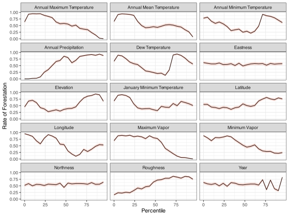
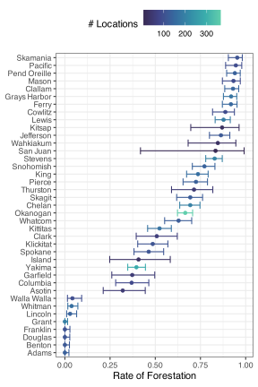
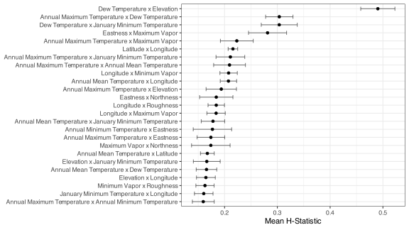
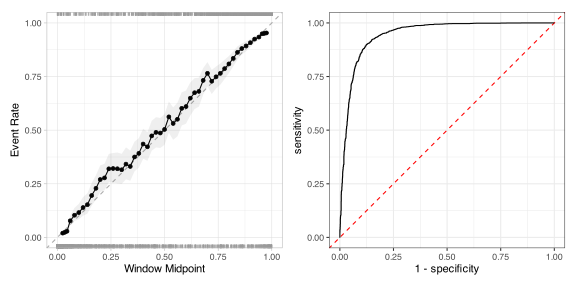
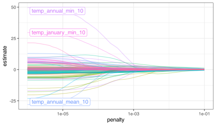
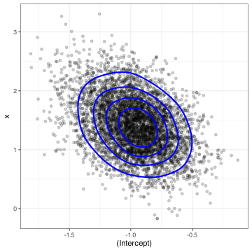

# skip: fmt
req_pkg <-
c("bestNormalize", "car", "DALEXtra", "embed", "glmnet", "mirai",
"probably", "rstanarm", "spatialsample", "tidymodels")
# Check to see if they are installed:
pkg_installed <- vapply(req_pkg, rlang::is_installed, logical(1))
# Install missing packages:
if ( any(!pkg_installed) ) {
install_list <- names(pkg_installed)[!pkg_installed]
pak::pak(install_list)
}16 Generalized Linear and Additive Classifiers
This chapter describes how to develop classifiers that have linear or additive structures.
16.1 Requirements
You’ll need 10 packages (bestNormalize, car, DALEXtra, embed, glmnet, mirai, probably, rstanarm, spatialsample, tidymodels) for this chapter:
Let’s load the meta package and manage some between-package function conflicts.
library(tidymodels)
library(spatialsample)
library(embed)
library(bestNormalize)
library(probably)
library(patchwork)
library(car)
library(DALEXtra)
tidymodels_prefer()
theme_set(theme_bw())
# We'll use parallel processing too:
mirai::daemons(parallel::detectCores())16.2 Exploring Forestation Data
The forestation data have already been split and resampled. The results are contained in an RData file called forested_data.RData. Let’s load that from GitHub:
We have already precomputed some H-statistics for these data using a boosted tree as the substrate model. The code to do that is on GitHub, and we’ll load another RData file with the results:
The code for the exploratory data analysis plot is shown here. We’ll need to take our training set and stack the numeric predictors on one another:
The first data plot shows the predictors by their percentiles, so we should compute these for each predictor. Some columns do not have a lot of unique values, so we compute the maximum granularity of the data and use that if there are fewer than 21 unique values:
Then we compute the percentiles for each using dplyr::ntile():
percentiles <-
vert_forest |>
full_join(num_unique, by = "Predictor") |>
# Create a list column with the data for each predictor:
group_nest(Predictor, num_vals) |>
mutate(
# Map over the predictor data sets and their respective
# number of bins (21 or fewer) to add a `group` column
# with the group number:
pctl = map2(
data,
num_vals,
~ tibble(group = ntile(.x$value, n = .y), class = .x$class)
)
) |>
# Remove the original data
select(-data) |>
# Expand the list column of data frames into one table:
unnest(c(pctl)) |>
# Compute the percentile number from the group number
mutate(pctl = (group - 1) / num_vals * 100) |>
# Compute the number of forested locations in the percentile
# for each predictor:
summarize(
events = sum(class == "Yes"),
total = length(class),
.by = c(Predictor, pctl)
) |>
# Get the estimated proportion and confidence intervals:
mutate(
prop_obj = map2(events, total, ~ tidy(binom.test(.x, .y, conf.level = 0.9)))
) |>
select(-events) |>
unnest(c(prop_obj))Finally, we create the plot:
percentiles |>
ggplot(aes(pctl, estimate)) +
geom_line() +
geom_ribbon(
aes(ymin = conf.low, ymax = conf.high),
alpha = 1 / 5,
fill = "#D85434FF"
) +
facet_wrap(~Predictor, ncol = 3) +
labs(x = "Percentile", y = "Rate of Forestation")
For the county data, we compute binom.test() for each county, pull out the results, and do some formatting:
obs_rates <-
forested_train |>
summarize(
rate = mean(class == "Yes"),
events = sum(class == "Yes"),
total = length(class),
.by = c(county)
) |>
mutate(
object = map2(events, total, binom.test, conf.level = 0.9),
pct = rate * 100,
.lower = map_dbl(object, ~ .x$conf.int[1]),
.upper = map_dbl(object, ~ .x$conf.int[2]),
county = tools::toTitleCase(gsub("_", " ", county)),
county = factor(county),
county = reorder(county, rate),
`# Locations` = total
)Here is the plot code:
obs_rates |>
ggplot(aes(y = county, col = `# Locations`)) +
geom_point(aes(x = rate)) +
geom_errorbar(aes(xmin = .lower, xmax = .upper)) +
labs(x = "Rate of Forestation", y = NULL) +
theme(legend.position = "top") +
scale_color_viridis_c(option = "mako", begin = .2, end = .8)
From our interaction analysis, which used H-statistics, 105 pairwise interactions were assessed. We can look at their H values along with 90% confidence intervals for the top 25 interactions:
forested_hstats_text |>
slice_max(mean_score, n = 25) |>
ggplot(aes(y = term)) +
geom_point(aes(x = mean_score)) +
geom_errorbar(
aes(xmin = .lower, xmax = .upper),
alpha = 1 / 2,
width = 1 / 2
) +
labs(x = "Mean H-Statistic", y = NULL)
We’ll use the top five interactions in our model. A precomputed formula for those is:
forested_int_form
#> ~dew_temp:elevation + dew_temp:temp_annual_max + dew_temp:temp_january_min +
#> eastness:vapor_max + temp_annual_max:vapor_max16.3 Logistic Regression
To start, the focus is on basic logistic regression via maximum likelihood using the glm() function.
Generalized Linear Models
In R, the function to produce logistic regression models is one of the most well-known: glm(). To train this model for the forestry data, the simplest invocation is:
lr_fit <- glm(class ~ ., data = forested_train, family = binomial)
lr_fit
#>
#> Call: glm(formula = class ~ ., family = binomial, data = forested_train)
#>
#> Coefficients:
#> (Intercept) year elevation eastness
#> -5.51e+01 4.39e-03 -8.38e-04 2.53e-04
#> northness roughness dew_temp precip_annual
#> -1.64e-03 -9.77e-03 4.89e-01 -1.23e-03
#> temp_annual_mean temp_annual_min temp_annual_max temp_january_min
#> 8.32e+00 1.28e+00 -5.64e+00 -5.34e+00
#> vapor_min vapor_max countyasotin countybenton
#> 1.32e-02 1.53e-02 -1.54e+01 -4.90e-01
#> countychelan countyclallam countyclark countycolumbia
#> -1.74e+01 -1.75e+01 -1.45e+01 -1.50e+01
#> countycowlitz countydouglas countyferry countyfranklin
#> -1.60e+01 1.23e+00 -1.98e+01 -1.22e+00
#> countygarfield countygrant countygrays_harbor countyisland
#> -1.54e+01 -1.34e-01 -1.56e+01 -1.51e+01
#> countyjefferson countyking countykitsap countykittitas
#> -1.66e+01 -1.54e+01 -1.74e+01 -1.62e+01
#> countyklickitat countylewis countylincoln countymason
#> -1.74e+01 -1.68e+01 -1.43e+01 -1.71e+01
#> countyokanogan countypacific countypend_oreille countypierce
#> -1.75e+01 -1.59e+01 -1.82e+01 -1.57e+01
#> countysan_juan countyskagit countyskamania countysnohomish
#> -1.76e+01 -1.49e+01 -1.68e+01 -1.51e+01
#> countyspokane countystevens countythurston countywahkiakum
#> -1.65e+01 -1.84e+01 -1.61e+01 -1.50e+01
#> countywalla_walla countywhatcom countywhitman countyyakima
#> -1.42e+01 -1.49e+01 -1.42e+01 -1.70e+01
#> longitude latitude
#> -3.24e-01 7.23e-01
#>
#> Degrees of Freedom: 4831 Total (i.e. Null); 4778 Residual
#> Null Deviance: 6620
#> Residual Deviance: 3040 AIC: 3150The family argument is required to indicate that we are optimizing the binomial/Bernoulli log-likelihood function.
The default formula method in R converts our county predictor to a set of 38 binary indicator columns. No other preprocessing is done by glm().
There is a summary method for glm() that gives more information regarding the parameter estimates (but is fairly long).:
summary(lr_fit)
#>
#> Call:
#> glm(formula = class ~ ., family = binomial, data = forested_train)
#>
#> Coefficients:
#> Estimate Std. Error z value Pr(>|z|)
#> (Intercept) -5.51e+01 5.58e+02 -0.10 0.9213
#> year 4.39e-03 1.37e-02 0.32 0.7482
#> elevation -8.38e-04 6.27e-04 -1.34 0.1811
#> eastness 2.53e-04 6.59e-04 0.38 0.7014
#> northness -1.64e-03 6.71e-04 -2.44 0.0145 *
#> roughness -9.77e-03 1.47e-03 -6.64 3.2e-11 ***
#> dew_temp 4.89e-01 1.92e-01 2.54 0.0111 *
#> precip_annual -1.23e-03 1.36e-04 -9.04 < 2e-16 ***
#> temp_annual_mean 8.32e+00 1.13e+01 0.74 0.4604
#> temp_annual_min 1.28e+00 1.33e-01 9.56 < 2e-16 ***
#> temp_annual_max -5.64e+00 5.64e+00 -1.00 0.3177
#> temp_january_min -5.34e+00 5.63e+00 -0.95 0.3436
#> vapor_min 1.32e-02 3.79e-03 3.48 0.0005 ***
#> vapor_max 1.53e-02 1.36e-03 11.23 < 2e-16 ***
#> countyasotin -1.54e+01 5.57e+02 -0.03 0.9780
#> countybenton -4.90e-01 7.45e+02 0.00 0.9995
#> countychelan -1.74e+01 5.57e+02 -0.03 0.9751
#> countyclallam -1.75e+01 5.57e+02 -0.03 0.9749
#> countyclark -1.45e+01 5.57e+02 -0.03 0.9792
#> countycolumbia -1.50e+01 5.57e+02 -0.03 0.9785
#> countycowlitz -1.60e+01 5.57e+02 -0.03 0.9771
#> countydouglas 1.23e+00 8.21e+02 0.00 0.9988
#> countyferry -1.98e+01 5.57e+02 -0.04 0.9717
#> countyfranklin -1.22e+00 8.28e+02 0.00 0.9988
#> countygarfield -1.54e+01 5.57e+02 -0.03 0.9779
#> countygrant -1.34e-01 7.01e+02 0.00 0.9998
#> countygrays_harbor -1.56e+01 5.57e+02 -0.03 0.9776
#> countyisland -1.51e+01 5.57e+02 -0.03 0.9783
#> countyjefferson -1.66e+01 5.57e+02 -0.03 0.9762
#> countyking -1.54e+01 5.57e+02 -0.03 0.9779
#> countykitsap -1.74e+01 5.57e+02 -0.03 0.9750
#> countykittitas -1.62e+01 5.57e+02 -0.03 0.9768
#> countyklickitat -1.74e+01 5.57e+02 -0.03 0.9750
#> countylewis -1.68e+01 5.57e+02 -0.03 0.9759
#> countylincoln -1.43e+01 5.57e+02 -0.03 0.9796
#> countymason -1.71e+01 5.57e+02 -0.03 0.9755
#> countyokanogan -1.75e+01 5.57e+02 -0.03 0.9750
#> countypacific -1.59e+01 5.57e+02 -0.03 0.9772
#> countypend_oreille -1.82e+01 5.57e+02 -0.03 0.9740
#> countypierce -1.57e+01 5.57e+02 -0.03 0.9775
#> countysan_juan -1.76e+01 5.57e+02 -0.03 0.9748
#> countyskagit -1.49e+01 5.57e+02 -0.03 0.9786
#> countyskamania -1.68e+01 5.57e+02 -0.03 0.9759
#> countysnohomish -1.51e+01 5.57e+02 -0.03 0.9783
#> countyspokane -1.65e+01 5.57e+02 -0.03 0.9763
#> countystevens -1.84e+01 5.57e+02 -0.03 0.9736
#> countythurston -1.61e+01 5.57e+02 -0.03 0.9769
#> countywahkiakum -1.50e+01 5.57e+02 -0.03 0.9785
#> countywalla_walla -1.42e+01 5.57e+02 -0.03 0.9796
#> countywhatcom -1.49e+01 5.57e+02 -0.03 0.9786
#> countywhitman -1.42e+01 5.57e+02 -0.03 0.9796
#> countyyakima -1.70e+01 5.57e+02 -0.03 0.9757
#> longitude -3.24e-01 1.79e-01 -1.80 0.0711 .
#> latitude 7.23e-01 2.53e-01 2.86 0.0042 **
#> ---
#> Signif. codes: 0 '***' 0.001 '**' 0.01 '*' 0.05 '.' 0.1 ' ' 1
#>
#> (Dispersion parameter for binomial family taken to be 1)
#>
#> Null deviance: 6624.9 on 4831 degrees of freedom
#> Residual deviance: 3042.0 on 4778 degrees of freedom
#> AIC: 3150
#>
#> Number of Fisher Scoring iterations: 17If you would like the model estimates in a more computationally-friendly format, the tidy() method works well:
lr_coefs <- tidy(lr_fit)
lr_coefs
#> # A tibble: 54 × 5
#> term estimate std.error statistic p.value
#> <chr> <dbl> <dbl> <dbl> <dbl>
#> 1 (Intercept) -55.12 557.9 -0.09880 9.213e- 1
#> 2 year 0.004392 0.01368 0.3211 7.482e- 1
#> 3 elevation -0.0008383 0.0006269 -1.337 1.811e- 1
#> 4 eastness 0.0002527 0.0006591 0.3835 7.014e- 1
#> 5 northness -0.001641 0.0006714 -2.444 1.452e- 2
#> 6 roughness -0.009767 0.001471 -6.639 3.151e-11
#> # ℹ 48 more rowsThe predict() method is very limited. Using type = "response", get the estimated probability of the second factor level, with, in our case, the probability of being unforested. The is also a type = "link", which estimates the linear predictor values. There is also augment() which attaches the predictions and, if possible, the residuals. These are bound to the data being predicted:
augment(lr_fit, newdata = forested_train[1:2,], type.predict = "response") |>
relocate(.fitted)
#> # A tibble: 2 × 18
#> .fitted class year elevation eastness northness roughness dew_temp precip_annual
#> <dbl> <fct> <dbl> <dbl> <dbl> <dbl> <dbl> <dbl> <dbl>
#> 1 0.2218 Yes 2005 113 -25 96 30 6.4 1710
#> 2 0.2807 No 2005 164 -84 53 13 6.06 1297
#> # ℹ 9 more variables: temp_annual_mean <dbl>, temp_annual_min <dbl>,
#> # temp_annual_max <dbl>, temp_january_min <dbl>, vapor_min <dbl>,
#> # vapor_max <dbl>, county <fct>, longitude <dbl>, latitude <dbl>The object contains a fair amount of excess data. We can use the butcher package to see the size of the components in the object:
library(butcher)
weigh(lr_fit) |> print(n = 10)
#> # A tibble: 79 × 2
#> object size
#> <chr> <dbl>
#> 1 qr.qr 2.112
#> 2 residuals 0.3487
#> 3 fitted.values 0.3487
#> 4 linear.predictors 0.3487
#> 5 weights 0.3487
#> 6 prior.weights 0.3487
#> 7 y 0.3487
#> 8 effects 0.08110
#> 9 family.variance 0.04368
#> 10 family.dev.resids 0.04368
#> # ℹ 69 more rowsThe qr.qr element contains some crucial matrix algebra data, but there are many other elements that are not required if we would like to predict with this object (e.g., residuals, fitted.values, etc.). We can trim the object using butcher():
When using parsnip there is slightly more work:
lr_fit <- logistic_reg() |> fit(class ~ ., data = forested_train)
lr_fit
#> parsnip model object
#>
#>
#> Call: stats::glm(formula = class ~ ., family = stats::binomial, data = data)
#>
#> Coefficients:
#> (Intercept) year elevation eastness
#> -5.51e+01 4.39e-03 -8.38e-04 2.53e-04
#> northness roughness dew_temp precip_annual
#> -1.64e-03 -9.77e-03 4.89e-01 -1.23e-03
#> temp_annual_mean temp_annual_min temp_annual_max temp_january_min
#> 8.32e+00 1.28e+00 -5.64e+00 -5.34e+00
#> vapor_min vapor_max countyasotin countybenton
#> 1.32e-02 1.53e-02 -1.54e+01 -4.90e-01
#> countychelan countyclallam countyclark countycolumbia
#> -1.74e+01 -1.75e+01 -1.45e+01 -1.50e+01
#> countycowlitz countydouglas countyferry countyfranklin
#> -1.60e+01 1.23e+00 -1.98e+01 -1.22e+00
#> countygarfield countygrant countygrays_harbor countyisland
#> -1.54e+01 -1.34e-01 -1.56e+01 -1.51e+01
#> countyjefferson countyking countykitsap countykittitas
#> -1.66e+01 -1.54e+01 -1.74e+01 -1.62e+01
#> countyklickitat countylewis countylincoln countymason
#> -1.74e+01 -1.68e+01 -1.43e+01 -1.71e+01
#> countyokanogan countypacific countypend_oreille countypierce
#> -1.75e+01 -1.59e+01 -1.82e+01 -1.57e+01
#> countysan_juan countyskagit countyskamania countysnohomish
#> -1.76e+01 -1.49e+01 -1.68e+01 -1.51e+01
#> countyspokane countystevens countythurston countywahkiakum
#> -1.65e+01 -1.84e+01 -1.61e+01 -1.50e+01
#> countywalla_walla countywhatcom countywhitman countyyakima
#> -1.42e+01 -1.49e+01 -1.42e+01 -1.70e+01
#> longitude latitude
#> -3.24e-01 7.23e-01
#>
#> Degrees of Freedom: 4831 Total (i.e. Null); 4778 Residual
#> Null Deviance: 6620
#> Residual Deviance: 3040 AIC: 3150We don’t set the mode because logistic regression is only for classification, and the default engine is glm, so we don’t have to set that either. Note that the family value is set, but if an alternate value is required, this and other arguments can be passed as engine parameters (via set_engine()).
predict() and augment() have the same overall goal with two exceptions:
- The prediction types are
"class"and"prob"since those are the tidymodels standards. -
augment()for parsnip objects generates all prediction types at once.
The butcher() and tidy() methods also work the same.
If odds ratios are of interest, the tidy() method includes an option to exponentiate the coefficients. There is also an option to produce confidence intervals:
tidy(lr_fit, conf.int = TRUE, conf.level = 0.90, exponentiate = TRUE) |>
filter(grepl("county", term))
#> # A tibble: 38 × 7
#> term estimate std.error statistic p.value conf.low conf.high
#> <chr> <dbl> <dbl> <dbl> <dbl> <dbl> <dbl>
#> 1 countyasotin 0.0000002099 556.7 -0.02762 0.9780 8.353e-217 3.069e-188
#> 2 countybenton 0.6124 744.7 -0.0006586 0.9995 7.214e- 2 5.294e+ 0
#> 3 countychelan 0.00000002833 556.7 -0.03122 0.9751 1.193e-224 3.451e-193
#> 4 countyclallam 0.00000002556 556.7 -0.03141 0.9749 5.434e-215 1.471e-187
#> 5 countyclark 0.0000005036 556.7 -0.02605 0.9792 2.761e-214 1.312e-186
#> 6 countycolumbia 0.0000003091 556.7 -0.02693 0.9785 1.313e-218 3.178e-189
#> # ℹ 32 more rowsA few inconsequential warnings are produced when running these calculations.
In the output above, the estimate column is the odds ratios relative to the county in the reference cell (adams).
Forestation Model Development
In the text, we fit the same model under different preprocessing conditions. We’ll create a set of recipes, then use a workflow set to create and resample the combinations of preprocessors and our basic logistic model.
To get started, we create a basic recipe that contains dummy indicators for county and removes any zero-variance predictors:
bare_rec <-
recipe(class ~ ., data = forested_train) |>
step_dummy(county) |>
step_zv(all_predictors())We could let glm() do this for us. However, one nice thing about the recipe is that the indicator columns are formatted better than when generated by base R (e.g., county_asotin versus countyasotin), and we can remove near-zero predictors before sending data to the model. If glm() encounters such a predictor, it gives an NA value to the corresponding coefficient and issues a warning. The recipe provides a smoother experience, and we can further build on this preprocessor.
Now we add a step that uses the orderNorm transformation to ensure numeric predictors have symmetric distributions with equal mean and variance. Neither of these benefits is really needed for a basic logistic model, but the symmetry can often generate a small improvement in the results.
transformed_rec <-
recipe(class ~ ., data = forested_train) |>
step_orderNorm(all_numeric_predictors()) |>
step_dummy(county) |>
step_zv(all_predictors())Next, we will swap the step that generates dummy variables with an effect encoding method:
forest_rec <-
recipe(class ~ ., data = forested_train) |>
step_orderNorm(all_numeric_predictors()) |>
step_lencode_mixed(county, outcome = "class")As previously mentioned, we precomputed a set of potential interaction effects via the H-statistic. Now let’s add those interaction terms:
forest_int_rec <-
forest_rec |>
step_interact(!!forested_int_form)What is the !! about? This is a tool from the rlang package that can splice an object into an argument. We could type out the long(ish) formula in forested_int_form shown above. However, since it was programmatically generated and we have it as an R expression, we can insert it into the step function to get the same result.
Finally, we add spline terms to a few predictors based on the figure above, which plots binned forestation rates versus data percentiles. From there, a few predictors may benefit from including some nonlinear terms. We’ll generate 10 spine terms for numeric predictors that are not interactions (from the contains("_x_") specification), nothing/east-ness, the year, or the encoded county predictor.
Additionally, as we will describe shortly, step_lincomb() is used to eliminate any linear combinations of the predictors that may occur. These won’t throw an error in glm(), but they will generate noisy, cryptic warning messages.
forest_spline_rec <-
forest_int_rec |>
step_spline_natural(
# fmt: skip
all_numeric_predictors(), -county, -eastness, -northness, -year, -contains("_x_"),
deg_free = 10
) |>
step_lincomb(all_predictors())Let’s also create a metric set for a few performance measures:
cls_mtr <- metric_set(brier_class, roc_auc, pr_auc, mn_log_loss)Now that everything is prepared, let’s create the grid of workflows and then resample them. The preproc and model arguments take named lists of recipes and models, respectively. The names are used to create unique workflow IDs.
To resample them, we apply workflow_map() and add several options that are passed to fit_resamples():
forest_res <-
forest_set |>
workflow_map(
fn = "fit_resamples",
resamples = forested_rs,
control = control_resamples(save_pred = TRUE),
metrics = cls_mtr
)Printing out the results isn’t very informative.
forest_res
#> # A workflow set/tibble: 5 × 4
#> wflow_id info option result
#> <chr> <list> <list> <list>
#> 1 simple_logistic_mle <tibble> <opts[3]> <rsmp[+]>
#> 2 encoded + transformations_logistic_mle <tibble> <opts[3]> <rsmp[+]>
#> 3 encoded_logistic_mle <tibble> <opts[3]> <rsmp[+]>
#> 4 encoded + interactions_logistic_mle <tibble> <opts[3]> <rsmp[+]>
#> 5 encoded + transformations + splines_logistic_mle <tibble> <opts[3]> <rsmp[+]>However, there are a variety of helper functions for this object class:
-
rank_results()will order the models (or model configurations) by a metric of the user’s choice. -
extract_workflow_set_result()pulls out the object produced byfit_resamples()so that you can plot or examine the results. -
collect_metrics()andcollect_predictions()can be used to get an overall list by model and configuration. The latter function only works if the control optionsave_pred = TRUEwas used for each of the workflows (which we did in this case).
Let’s rank by the Brier score:
ranked <-
rank_results(forest_res, rank_metric = "brier_class") |>
filter(.metric == "brier_class") |>
select(rank, wflow_id, mean, std_err, n)
ranked
#> # A tibble: 5 × 5
#> rank wflow_id mean std_err n
#> <int> <chr> <dbl> <dbl> <int>
#> 1 1 encoded + transformations + splines_logistic_mle 0.08365 0.007238 10
#> 2 2 encoded + interactions_logistic_mle 0.09357 0.008852 10
#> 3 3 encoded + transformations_logistic_mle 0.1019 0.009187 10
#> 4 4 encoded_logistic_mle 0.1057 0.01044 10
#> 5 5 simple_logistic_mle 0.1093 0.009861 10Let’s get the final model for the highest ranked workflow:
lr_best <-
forest_res |>
extract_workflow(forest_res, id = ranked$wflow_id[1]) |>
fit(forested_train)
#> Warning: glm.fit: fitted probabilities numerically 0 or 1 occurredThe main text computed a few more statistics related to model performance. First, we can compute bootstrap confidence intervals for our metrics btw pulling out the results of fit_resamples(), then running int_pctl():
set.seed(799)
lr_best_int <-
forest_res |>
extract_workflow_set_result(id = ranked$wflow_id[1]) |>
int_pctl(times = 2000, metrics = cls_mtr, alpha = 0.1)
lr_best_int
#> # A tibble: 4 × 6
#> .metric .estimator .lower .estimate .upper .config
#> <chr> <chr> <dbl> <dbl> <dbl> <chr>
#> 1 brier_class bootstrap 0.07906 0.08372 0.08834 pre0_mod0_post0
#> 2 mn_log_loss bootstrap 0.2761 0.2935 0.3108 pre0_mod0_post0
#> 3 pr_auc bootstrap 0.9365 0.9439 0.9512 pre0_mod0_post0
#> 4 roc_auc bootstrap 0.9407 0.9459 0.9512 pre0_mod0_post0Also, we can estimate the no-information rate for the Brier score: how bad could the statistic be if there were no relationship between the observed and predicted data? To do this, we pull the out-of-sample predictions, create 50 data sets with permuted class labels, then recompute the Brier score. We can average these 50 values to get a good sense of what a truly bad Brier score would be.
assessment_pred <-
forest_res |>
extract_workflow_set_result(id = ranked$wflow_id[1]) |>
collect_predictions()
set.seed(365)
brier_perm <-
assessment_pred |>
# This randomizes the rows of the column named in `permute`:
permutations(permute = "class", times = 50) |>
mutate(
data = map(splits, analysis),
brier = map_dbl(data, ~ brier_class(.x, class, .pred_Yes)$.estimate)
) |>
summarize(
permutation = mean(brier),
n = length(brier),
std_err = sd(brier) / sqrt(n)
) |>
mutate(
lower = permutation - qnorm(.95) * std_err,
upper = permutation + qnorm(.95) * std_err
)
brier_perm
#> # A tibble: 1 × 5
#> permutation n std_err lower upper
#> <dbl> <int> <dbl> <dbl> <dbl>
#> 1 0.4214 50 0.0008111 0.4201 0.4227We can also check visual diagnostics of performance, such as the calibration and ROC curves. These pool data across all assessment sets, so consider these curves approximations of the real curves.
For calibration, we can use the cal_plot_windowed() function from the probably package. There are two interfaces that we can use. The first just passes the results to fit_resamples(), which knows which columns are the observed and predicted outcomes:
forest_res |>
extract_workflow_set_result(id = ranked$wflow_id[1]) |>
cal_plot_windowed(step_size = 0.02)The second interface uses the data frame of observed and predicted values as input; however, we must specify the appropriate column names as arguments. This approach is best when you have other plots in mind or if you are not using tidymodels to create the models.
This code chunk creates two visualizations that are based on ggplot2. We’ve also loaded the patchwork package. This enables the last line, which combines two ggplot2 objects, to render them side by side.

16.3.1 Examining the Model
The main text uses deviance residuals to make more fine-grained appraisals of how well the model fits the data. Those residuals were originally defined for generalized linear models and contrast a perfect “saturated” model to our current model. For a glm object, the function stats::resid() can compute them. Also, in most cases, broom::augment() adds a column for them.
Here is a dplyr pipeline to compute them for any model that has predicted binary outcomes:
logistic_resdiduals <-
assessment_pred |>
mutate(
indicator = ifelse(class == "Yes", 1, 0),
error = indicator - .pred_Yes,
dev_1 = indicator * log(.pred_Yes),
dev_2 = (1 - indicator) * log(1 - .pred_Yes),
deviance = sign(error) * sqrt((-2 * (dev_1 + dev_2)))
) |>
inner_join(forested_train |> add_rowindex() |> select(-class), by = ".row") |>
relocate(deviance, .after = class)
logistic_resdiduals[, 1:5]
#> # A tibble: 4,832 × 5
#> .pred_Yes .pred_No id class deviance
#> <dbl> <dbl> <chr> <fct> <dbl>
#> 1 7.072e- 1 0.2928 Fold01 Yes 8.325e-1
#> 2 9.305e- 1 0.06945 Fold01 Yes 3.794e-1
#> 3 9.606e- 1 0.03944 Fold01 Yes 2.837e-1
#> 4 4.559e- 1 0.5441 Fold01 No -1.103e+0
#> 5 9.906e- 1 0.009407 Fold01 Yes 1.375e-1
#> 6 2.220e-16 1 Fold01 No -2.107e-8
#> # ℹ 4,826 more rowsThese results will not match what resid() or augment() would produce, since those functions compute residuals based on the training data, whereas we are computing them from the assessment set predictions.
We can plot these for our model:

16.3.2 Interpreting the Logistic Model
In this section, we’ll focus on generating global explainers using the DALEXtra package. More extensive methods will be discussed in a later chapter.
To begin, we have to create an explainer object that contains the model fit and the data to use as substrate. Any data set with a sufficient number of rows can be used; there is no overfitting when using the training set. The explain_tidymodels() function will create the appropriate object. One note: for classification models, the option type = "prob" is required.
explainer_logistic <-
explain_tidymodels(
lr_best,
data = forested_train |> select(-class),
y = forested_train$class,
label = "",
type = "prob",
verbose = FALSE
)Now that we have this object, we can produce partial dependence plots (PDPs) for any predictor using model_profile(). Here is one for longitude:
set.seed(1805)
pdp_longitude <- model_profile(
explainer_logistic,
N = 1000,
variables = "longitude"
)There is a plot() method for this object, but we’ve created a ggplot2 function to create a simple plot:
ggplot_pdp <- function(obj, x) {
p <-
# Convert the "aggregated profiles" to a tibble
as_tibble(obj$agr_profiles) |>
# Alter the `_label_` column a bit
mutate(`_label_` = stringr::str_remove(`_label_`, "^[^_]*_")) |>
# Here `_x_` is the variable being profiled and `_yhat_` is the predicted
# value. For a binary `glm` object, this is the probability of the _second_
# factor level. To get the probability that a location is forested, we
# use 1 = _yhat_.
ggplot(aes(`_x_`, 1 - `_yhat_`)) +
geom_line(
# We create the light grey lines for the profiles produced for each of
# the sampled data points (where the sample number is in `_ids_)
data = as_tibble(obj$cp_profiles),
aes(x = {{ x }}, group = `_ids_`),
linewidth = 0.5,
alpha = 0.05,
color = "gray50"
)
num_colors <- n_distinct(obj$agr_profiles$`_label_`)
# Now add the line(s) for the mean prediction:
if (num_colors > 1) {
p <- p + geom_line(aes(color = `_label_`), linewidth = 1.2, alpha = 0.8)
} else {
p <- p + geom_line(color = "darkred", linewidth = 1.2, alpha = 0.8)
}
p
}
ggplot_pdp(pdp_longitude, longitude) +
labs(y = "Probability of Forestation", x = "Longitude") +
# Let's add a "rug" to show where the training set data values are located:
geom_rug(data = forested_train, aes(x = longitude, y = NULL), alpha = 1 / 10)
16.3.3 A Potential Problem: Multicollinearity
To diagnose multicollinearity in a generalized linear model, the car package has a vif() function. This produces a named numeric vector with variance inflation factor values. While there is no tidy() method as of now, we can pull out the glm object from our previous parsnip fit and tidy it:
lr_best |>
extract_fit_engine() |>
car::vif() |>
tibble::enframe() |>
set_names(c("term", "estimate"))
#> # A tibble: 129 × 2
#> term estimate
#> <chr> <dbl>
#> 1 year 1.076
#> 2 eastness 1.165
#> 3 northness 1.080
#> 4 county 2.800
#> 5 dew_temp_x_elevation 301.8
#> 6 dew_temp_x_temp_annual_max 310.2
#> # ℹ 123 more rowsAs shown before### Regularization Through Penalization {#sec-logistic-penalized}
The primary package for regularized generalized linear models is glmnet. A few notes about glmnet::glmnet():
- It only takes x/y inputs, where
xmust be a matrix. This means that any feature engineering and preprocessing must be performed before running the function. -
xcould be a sparse matrix, which can reduce memory requirements and execution time. If your data contains many sparse columns (perhaps from binary indicators), create these columns in a recipe, and it will automatically create a tibble of sparse vectors and then hand that data to glmnet() in a sparse format. -
xshould have at least two columns. -
glmnet(), be default, automatically selects a set of path values; these are the penalty values that it will evaluate. If you want to predict other penalties, it will use linear interpolation. Note that, within resampling, the paths will change as the data changes. With tidymodels, you can pass an engine argument calledpath_valueswith a sequence of penalties. This will standardize the path across resamples. See this parsnip documentation package for more information. - If you plan on predicting a glmnet model that does not penalize, you may not get the correct value. Setting the engine option
lambda.min.ratio = 0or include 0.0 in the path. See this GitHub issue for an example and discussions.
Let’s show how to fit a single glmnet model with parsnip. The main changes reflect the differences between glm() and glmnet(). To demonstrate setting the path, we’ll start by making a sequence of penalties, then pass that in an engine argument:
glmn_pen <- 10^seq(-6, -1, length.out = 50)
glmn_spec <-
logistic_reg(penalty = 0.01, mixture = 0.5) |>
# No need to set the mode
set_engine("glmnet", path_values = !!glmn_pen)As described above, we use !! to splice the value of glmn_pen into the object (instead of R making a reference to it).
From here, we can create a workflow with a recipe and then fit():
glmn_wflow <- workflow(forest_spline_rec, glmn_spec)
glmn_fit <- glmn_wflow |> fit(forested_train)There are two extra niceties for this model. First, there is the tidy() method, which returns the model’s coefficients. When used on the parsnip object (e.g., glmn_fit), the default returns the coefficients for the penalty specified for the model. However, you can get estimates for a (single) other penalty all by passing an argument penalty:
# One penalty only:
tidy(glmn_fit)
#>
#> Attaching package: 'Matrix'
#> The following objects are masked from 'package:tidyr':
#>
#> expand, pack, unpack
#> Loaded glmnet 4.1-10
#> # A tibble: 130 × 3
#> term estimate penalty
#> <chr> <dbl> <dbl>
#> 1 (Intercept) -0.1295 0.01
#> 2 year 0 0.01
#> 3 eastness 0 0.01
#> 4 northness -0.009435 0.01
#> 5 county -0.4190 0.01
#> 6 dew_temp_x_elevation -0.1673 0.01
#> # ℹ 124 more rows
# All penalties on the path:
tidy(glmn_fit, penalty = 0.1)
#> # A tibble: 130 × 3
#> term estimate penalty
#> <chr> <dbl> <dbl>
#> 1 (Intercept) -0.4299 0.1
#> 2 year 0 0.1
#> 3 eastness 0 0.1
#> 4 northness 0 0.1
#> 5 county -0.2297 0.1
#> 6 dew_temp_x_elevation 0 0.1
#> # ℹ 124 more rows
# Get everything on the path:
purrr::map_dfr(glmn_pen, ~ tidy(glmn_fit, penalty = .x))
#> # A tibble: 6,500 × 3
#> term estimate penalty
#> <chr> <dbl> <dbl>
#> 1 (Intercept) -4.517 0.000001
#> 2 year 0.003240 0.000001
#> 3 eastness -0.06090 0.000001
#> 4 northness -0.1109 0.000001
#> 5 county -0.7114 0.000001
#> 6 dew_temp_x_elevation -0.7942 0.000001
#> # ℹ 6,494 more rowsThere is also a tidy() method for the glmnet fit object. It has similar results but uses the engine names for the columns.
The second nicety is the autoplot() function:
# Pull the parsnip fit out of the workflow
glmn_fit |>
extract_fit_parsnip() |>
autoplot()
This shows how the parameters change over the penalty values. The documentation page shows the different options for highlighting specific model terms at different penalties.
When tuning this model, it can be helpful to use a regular grid for the two glmnet parameters. Since all penalties are “trained” at once, a single fit is required for each mixture value. Using a space-filling design accidentally circumvents this feature.
Also, if tidymodels creates an automatic grid for you, it sets the minimum mixture to 0.05 instead of 0.0 to avoid a pure ridge fit. See this GitHub issue for an example and explanation.
Currently, glmnet is the only engine in tidymodels for (non-Bayesian) regularized regression. SCAD and MCP penalties can be fit using the ncvreg directly.
Refitting the Forestation Model
The code used to tune the glmnet model using the more complex recipe was:
# Path and regular grid:
glmn_pen <- 10^seq(-6, -1, length.out = 50)
glmn_grid <- crossing(penalty = glmn_pen, mixture = c(0:4) / 4)
glmn_spec <-
logistic_reg(penalty = tune(), mixture = tune()) |>
set_engine("glmnet", path_values = !!glmn_pen)
glmn_wflow <-
best_mle_wflow |>
update_model(glmn_spec)
glmn_res <-
glmn_wflow |>
tune_grid(
resamples = forested_rs,
grid = glmn_grid,
control = control_grid(save_pred = TRUE, save_workflow = TRUE),
metrics = cls_mtr
)16.3.4 Bayesian Estimation
For fitting logistic regression models using Bayesian estimation, there are a few options. For a simple model, use the "stan" engine. This fits a non-hierarchical model. If you have rows in the training set that cause correlated errors (e.g., measurements of people over time, etc.), the "stan_glmer" engine is more appropriate. We’ll focus on the former.
tidymodels uses the rstanarm package for estimation, which relies on the sophisticated stan framework for estimation. The underlying function that is called is rstanarm::stan_glm(). It has syntax very similar to glm(), but has extra arguments. In tidymodels, these can be passed as engine arguments.
Main prior options (documentation page):
-
prior: The prior distribution(s) for the (non-hierarchical) regression coefficients. For example,rstanarm::normal()for Gaussian,rstanarm::laplace()for Laplacian, etc. -
prior_int: The prior for the random intercept (if any). This is the prior after the regression terms have been scaled.
Sampling options (documentation page, package vignette):
-
chains: The number of parallel Markov chain Monte Carlo (MCMC) optimizations to run. -
iter: How many total iterations to run in each chain. By default, it will use half of these as the warmup. -
warmup: How many ofiterare used for warmup. -
thin: The period for saving samples. The default saves all samples (post-warmup) to approximate the posterior. -
cores: How many worker processes are used to run the MCMC chains. -
seed: An integer seed value to control randomness. If not set, tidymodels pulls an integer from the current random number stream.
Other relevant options are:
-
refresh: How often, in iterations, to print an update. This is set to 0 when used via tidymodels.
Bayesian estimation can be computationally expensive. To demonstrate, let’s recreate the simulated data from the main text:
# We'll simulate a single point prior:
true_means <- c(1.0, -1.5)
num_samples <- 100
set.seed(1)
x <- runif(num_samples, min = -1)
set.seed(2)
example_tr_data <- tibble::tibble(
x = x,
lp = true_means[1] + true_means[2] * x,
truth = plogis(lp),
random = runif(num_samples),
class = factor(ifelse(random <= truth, "A", "B"))
)To get started, let’s fit the model using default (wide Gaussian) priors, using a single chain:
set.seed(282)
example_fit <-
logistic_reg() |>
set_engine("stan", chains = 1, iter = 10000) |>
fit(class ~ x, data = example_tr_data)
example_fit |> print(digits = 3)
#> parsnip model object
#>
#> stan_glm
#> family: binomial [logit]
#> formula: class ~ x
#> observations: 100
#> predictors: 2
#> ------
#> Median MAD_SD
#> (Intercept) -0.967 0.241
#> x 1.402 0.477
#>
#> ------
#> * For help interpreting the printed output see ?print.stanreg
#> * For info on the priors used see ?prior_summary.stanreg
augment(example_fit, new_data = tibble(x = (0:5)/5))
#> # A tibble: 6 × 4
#> .pred_class .pred_A .pred_B x
#> <fct> <dbl> <dbl> <dbl>
#> 1 A 0.7257 0.2743 0
#> 2 A 0.6657 0.3343 0.2
#> 3 A 0.6000 0.4000 0.4
#> 4 A 0.5304 0.4696 0.6
#> 5 B 0.4596 0.5404 0.8
#> 6 B 0.3904 0.6096 1The predictions are based on the posterior mean. The simplest way to get the posterior samples is to use as.matrix() on the underlying rstanarm object:
rstanrm_fit <-
example_fit |>
extract_fit_engine()
post_df <-
rstanrm_fit |>
as.matrix() |>
as_tibble()
post_df |>
ggplot(aes(`(Intercept)`, x)) +
geom_point(alpha = 1 / 5) +
geom_density2d(col = "blue", bins = 5, linewidth = 1, adjust = 2)
There are many more operations on the engine fit object, including posterior diagnostics and visualizations. Two resources are:
- The tidybayes package website.
- How to Use the rstanarm Package